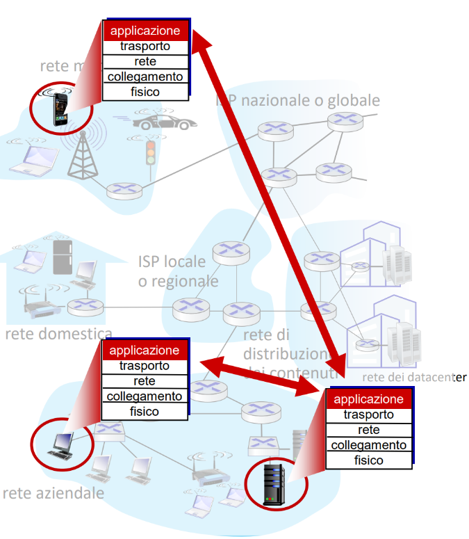
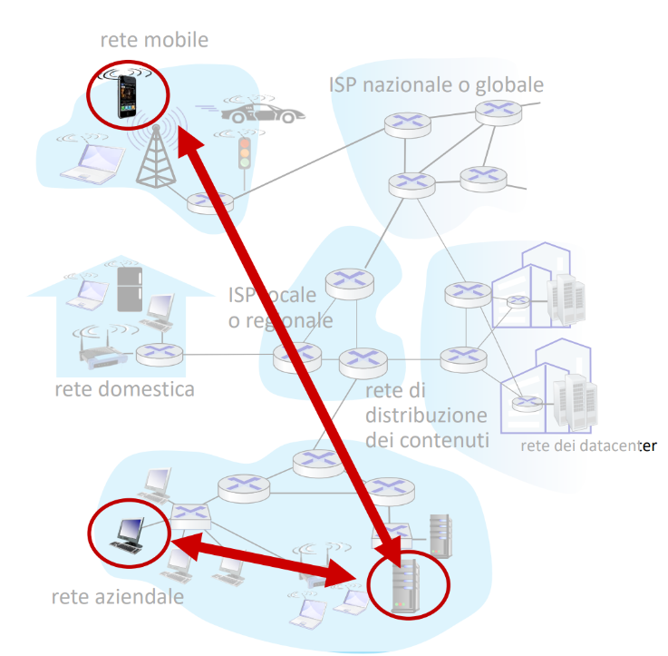
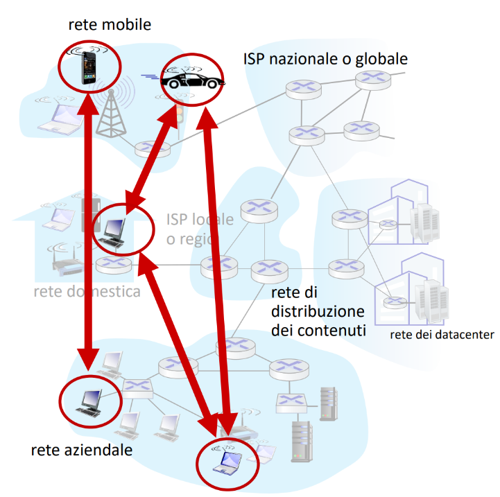
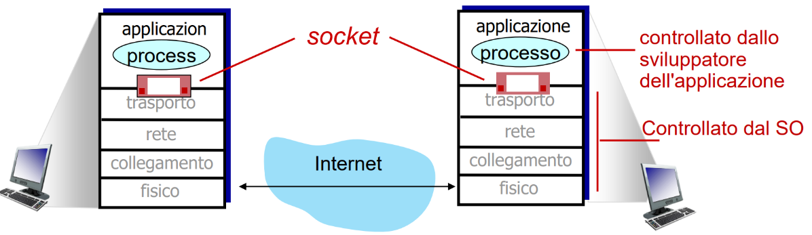
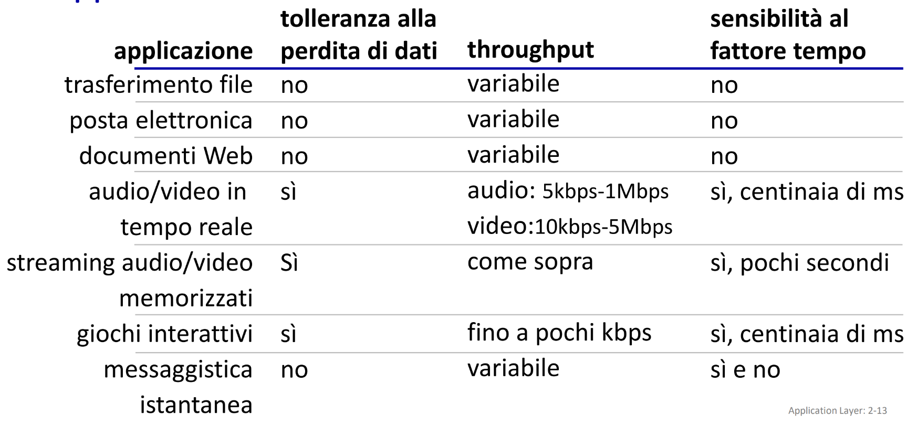
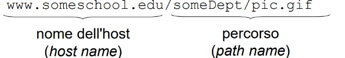
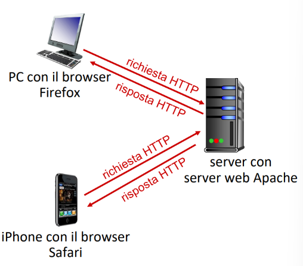
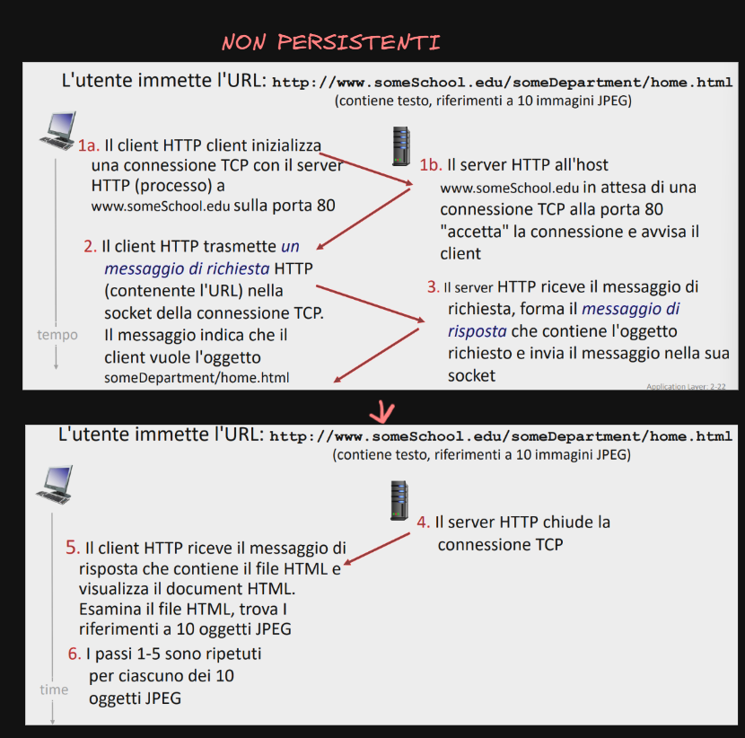
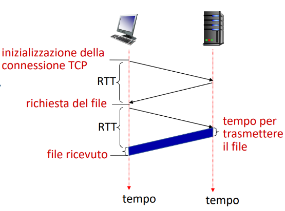
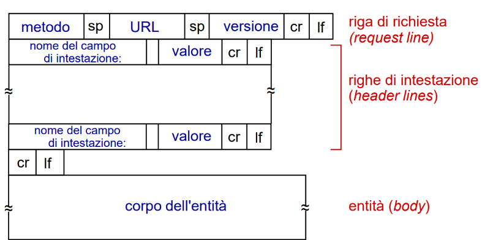

Livello di applicazione
Nel livello applicativo ci sono le applicazioni di rete ad esempio
- posta elettronica
- trasferimento file
- social media
- streaming di video-clip memorizzati
- VoIP I dispositivi che eseguono le applicazioni di rete non sono quelle nel nucleo bensì quelle che confinano al nucleo

Come architettare le nostre applicazioni di rete
abbiamo due approcci principali
client-server
abbiamo due attori principali 
- server
- macchina che deve essere sempre attiva per soddisfare le richieste dei client
- indirizzo IP ben noto
- se necessario deve essere potente per soddisfare enormi richieste
- client
- contattano il server
- possono funzionare in modo intermittente
- possono cambiare indirizzi IP perché il server non deve per forza conoscere il client
- in questa struttura i client non comunicano tra di loro ma solo con il server
esempio di app client-server: servizio di posta elettronica che vedremo meglio dopo
- oppure abbiamo host client o host server (è la stessa cosa ma dicendo host intendi il dispositivo vero e proprio)
- dire solo client-server si riferisce più all’architettura
peer-to-peer
Non c’è un server sempre attivo e non ci deve essere una infrastruttura complessa e costosa È definito dai peer pari che comunicano direttamente tra di loro Ha una scalabilità intrinseca:
- aggiungere un peer aumenta carico perché chiedo dei chunk ma aumento anche le disponibilità quindi si deve avere un certo equilibrio i peer sono degli host che possono apparire o sparire e quindi non devono avere per forza stesso indirizzo IP chunk: singolo pezzetto di un file 
Processi comunicanti
Come comunicano i processi Nel contesto delle reti un processo è un programma in esecuzione su un host i processi possono comunicare:
Nello stesso host
Comunicano con un sistema interconnesso dettato dal sistema operativo
Su host differenti
Comunicano attraverso messaggi
Precisazione su Client Server
Server: fornisce il servizio Client: colui che lo richiede Un server non deve per forza avere un solo ruolo ma può averli entrambi basta che siano su due nodi differenti della rete ad esempio P2P
Socket
Socket è una interfaccia software che permette a un processo di inviare e ricevere messaggi
- funziona come una porta comunicante per cui il mittente può inviare il messaggio e avere una struttura dati che finirà nelle mani del destinatario
- I livelli fino a quello di trasporto sono gestiti dal SO
- i livelli di applicazione sono controllati dallo sviluppatore dell’applicazione 
Indirizzamento
Se vogliamo mandare un messaggio a un processo dobbiamo poterlo identificare
- Un host ha il uso Indirizzo IP univoco a 32 o 128 in base al ipv4-6 Se vogliamo inviare a un processo un messaggio dobbiamo identificare l’host e poi l’applicazione Una volta identificato l’host attraverso l’indirizzo IP con quale processo parlo? esso è dato dal numero di porta che identifica una determinata socket su cui si appoggia il processo il numero è a piacere soprattutto se sopra 1024
- alcuni sono registrati da IANA che registra delle porte standard
- ad esempio ha registrato
- porta HTTP:80
- porta di posta elettronica:25 esempio di invio di un messaggio a un server utilizzando
- ad esempio ha registrato
- indirizzo IP: 128.119.245.12
- numero di porta: 80 Il DNS aiuta per l’indirizzo IP invece per il numero di porta bisogna segnarne uno noto sennò non si trova
Protocollo
Definizione di protocollo nel livello applicativo cosa definisce:
- il tipo di messaggi
- tipo se è un messaggio di richiesta di risposta
- la sintassi del messaggio
- campi del messaggio
- semantica dei messaggi
- cosa significano le informazioni nei campi
- regole
- regole generali di invio e ricezione dei messaggi
Ci sono due tipi di protocolli
- di pubblico dominio
- specifica nota
- scritte in documenti come RFC definiti dalla IETF(un ente)
- tipo HTTP o SMTP
- garantiscono interoperabilità
- quando due dispositivi sviluppati da aziende diverse possono funzionare assieme
- proprietari
- skype e zoom
- specifiche non note
Quale servizio di trasporto usare in base a un’applicazione
- cosa è una perdita di dati
- data da coda o congestione
- Errori di trasmissione
- recuperi con algoritmi dei dati alcune applicazioni pretendono il 100% dei dati altre possono tollerare ad esempio app che gestiscono contenuti multimediali come audio/video
- sensibilità al fattore tempo
- applicazioni interattive ne risentono
- troughput
- Le applicazioni multimediali necessitano di un troughput minimo
- sicurezza
- riservatezza, integrità dei dati, autenticazione Tabella interessante sui vari requisiti 
Servizi e protocolli forniti da internet
Servizio TCP
Servizio affidabile che consente il trasferimento e il controllo del flusso di dati da una parte a un’altra
- consente di bloccare momentaneamente il processo d’invio quando la rete è sovraccarica
Servizio UDP
Servizio senza particolari fronzoli manda un messaggio a un processo ma non offre affidabilità
- ha solo un piccolo controllo degli errori che li segnala e basta
- non fornisce correzioni, si limita a rinviare l’informazione
(per la correzione vedremo ECC o Ritrasmissioni)
a fronte di minori garanzie offre maggiore velocita

Rendere sicuro TCP
nessuno dei due è sicuro ma per TCP venne ideato un protocollo di wrap al TCP che aggiunge un livello di sicurezza detto TLS La libreria TLS cifra e decifra il messaggio facendo da “intermediario” al TCP, controllando inoltre l’integrità dei dati altrimenti sarebbe tutto in chiaro
Web e HTTP
Concetto di hypertext: è un sistema di organizzazione delle informazioni in cui i contenuti sono divisi in pagine collegate tra loro tramite link Accedo a oggetti(risorse) che sono gli elementi che compongono una pagina web come anche un file HTML o il CSS o gif ognuno di questi oggetti e diviso da un URL 
- il nome dell’host non è l’indirizzo IP ma viene convertito dal DNS in indirizzo IP il DNS non è nel nucleo infatti il nucleo ha solo inoltro e instradamento
- il percorso dell’oggetto è come un file system da remoto
Panoramica su http
È alla base delle applicazioni web È un protocollo basato sul paradigma client server dove un client richiede un oggetto al server che lo restituisce il client è uno user agent il server è un server agent il web è indipendente dal dispositivo usato ad esempio basta che ho un browser con http 
Cosa usa http
usa TCP fino alla versione 2.0 per trasferire i dati sulla porta 80 HTTP è un protocollo stateless poiché non mantiene memoria dettagliata delle interazioni precedenti
- non ci conviene avere uno stato aumenta overhead
🔹 Passaggi della comunicazione HTTP su TCP (porta 80)
1️⃣ Il client inizializza la connessione TCP
- Il client (ad esempio un browser web) crea una socket e tenta di aprire una connessione TCP con il server sulla porta 80 (che è la porta standard per HTTP).
- Questo avviene tramite il 3-way handshake di TCP.
2️⃣ Il server accetta la connessione TCP
- Il server web (es. Apache, Nginx) riceve la richiesta di connessione e la accetta.
- La connessione TCP è ora stabilita e pronta per lo scambio di dati.
3️⃣ Scambio di messaggi HTTP
- Il client (browser) invia una richiesta HTTP al server
- Il server web risponde con il contenuto richiesto
4️⃣ Chiusura della connessione TCP
- Una volta terminato lo scambio dei dati, la connessione TCP viene chiusa.
- La chiusura può essere iniziata dal client o dal server tramite un 4-way handshake di TCP.
Tipi di HTTP
connessioni non persistenti
- si aprivano diverse connessioni per ogni richiesta
- usato fino alla versione 1 di http connessioni persistenti
- in http 2 le connessioni erano persistenti
- ogni richiesta era veicolata tra client e server
- senza disconnessione istantanea
- praticamente potevi scambiare più oggetti
esempio grafico di non persistenti

RTT Definizione
per calcolare il tempo di risposta bisogna introdurre il RTT indica quanto tempo impiega un piccolo pacchetto per andare dal client al server e ritornare al client
- tenendo conto di tutti i ritardi possibili
- tipo coda o congestione L’intervallo è indicato da un singolo RTT il tempo di risposta è dato da in questo caso abbiamo quindi abbiamo 
Connessioni persistenti
Le connessioni persistenti rispetto alle connessioni non persistenti ci consentono di pagare 1 RTT per tutti gli oggetti richiesti quando invece prima ne servivano 2 per oggetto Presentano una notevole riduzione di overhead e facilitazione sul controllo delle connessioni(ne controllo meno)
Messaggi HTTP
Il protocollo HTTP funziona con messaggi di richiesta e risposta un messaggio è formato da ASCII
Messaggio di richiesta
esempio di richiesta http Un tipico messaggio di richiesta HTTP appare così:
GET /index.html HTTP/1.1\r\n
Host: www.example.com\r\n
User-Agent: Mozilla/5.0\r\n
Accept: text/html\r\n
Accept-Language: en-us,en;q=0.5\r\n
Connection: keep-alive\r\n
\r\n
GET /index.html HTTP/1.1→ Indica il metodo HTTP, il file richiesto (/index.html) e la versione del protocollo (HTTP/1.1).Host: www.example.com→ Specifica il server a cui inviare la richiesta.User-Agent: Mozilla/5.0→ Specifica il browser e il sistema operativo del client.Accept: text/html→ Indica i tipi di contenuto che il client può ricevere.Accept-Language: en-us→ Indica la lingua preferita e la formattazioneConnection: keep-alive→ Chiede di mantenere la connessione aperta. /r sposta all’inizio delle colonne del testo e invece /n va a capo
Struttura generale di una richiesta HTTP
principalmente la struttura generale è divisa in 3 punti  1️⃣ Riga di richiesta (Request Line)
- Contiene il metodo HTTP, l’ URL richiesto e la versione HTTP. 2️⃣ Intestazioni (Header Lines)
- Contengono informazioni sul client e sulle preferenze della richiesta. 3️⃣ Corpo del messaggio (Entity Body)
- Presente solo in alcuni metodi HTTP, come POST e PUT.
- Contiene dati inviati al server (ad esempio, un form compilato dall’utente).
Piccola parentesi su altri messaggi di richiesta HTTP
🔹 Metodo POST
✅ Utilizzato per inviare dati al server.
✅ L’input dell’utente viene inviato nel corpo della richiesta HTTP (non nell’URL).
✅ Spesso usato nei form di login, registrazione o invio di dati sensibili.
🔹 Metodo GET
✅ Utilizzato per richiedere risorse dal server (es. pagine web).
✅ I dati inviati al server sono inclusi nell’URL, dopo un ?.
✅ Non sicuro per dati sensibili (es. password), perché i parametri sono visibili nell’URL.
🔹 Metodo HEAD
✅ Funziona come GET, ma richiede solo le intestazioni della risposta, senza il corpo.
✅ Utile per verificare se una risorsa esiste o controllare le metainformazioni (es. dimensione di un file).
l’intestazione sono tutti quei dati aggiuntivi al di fuori del corpo del messaggio
ad esempio
HTTP/1.1 200 OK
Date: Tue, 19 Mar 2024 14:00:00 GMT
Server: Apache/2.4.41 (Ubuntu)
Content-Type: text/html; charset=UTF-8
Content-Length: 5123
↑
queste sono le intestazioni
questo è il body
↓
<html>
<body>
<h1>Benvenuto!</h1>
</body>
</html>🔹 Metodo PUT
✅ Utilizzato per caricare o aggiornare un file sul server.
✅ Se il file esiste già, viene sostituito completamente.
Messaggio di risposta
è il messaggio di risposta che invia il server al client dopo che ha effettuato una richiesta Ad esempio
HTTP/1.1 200 OK ← RIGA DI STATO
Date: Tue, 19 Mar 2024 14:00:00 GMT
Server: Apache/2.4.41 (Ubuntu)
Last-Modified: Mon, 18 Mar 2024 10:00:00 GMT
Content-Length: 5123
Content-Type: text/html; charset=UTF-8
↑
TUTTO QUESTO È LA RIGA DI INTESTAZIONE
BODY IL CORPO DELLA RISPOSTA
↓
<html>
<body>
<h1>Benvenuto!</h1>
</body>
</html>
1️⃣ Riga di stato (Status Line)
- Contiene la versione del protocollo, il codice di stato e una breve descrizione. 2️⃣ Intestazioni della risposta (Header Lines)
- Forniscono informazioni aggiuntive sulla risposta, come il tipo di contenuto, la dimensione, la data ecc… 3️⃣ Corpo della risposta (Body)
- Contiene il contenuto effettivo della risposta (es. codice HTML di una pagina web, un’immagine, un file JSON, ecc.).
Tipologie di codici di stato
Per ogni errore esiste un codice che appartiene a un insieme ben definito dalla cifra delle centinaia
| Codice | Descrizione |
|---|---|
| 1xx (Informational) | Messaggi informativi, raramente usati. |
| 2xx (Success) | La richiesta è andata a buon fine. |
| 3xx (Redirect) | Il client deve fare un’altra richiesta perché la risorsa si è spostata. |
| 4xx (Client Error) | La richiesta contiene un errore (es. risorsa non trovata, richiesta non valida). |
| 5xx (Server Error) | Errore lato server, il server non ha potuto soddisfare la richiesta. |
🔹Esempi di codici di stato HTTP più comuni
| Codice | Significato | Descrizione |
|---|---|---|
| 200 OK | ✅ Successo | La richiesta è stata completata con successo. |
| 301 Moved Permanently | 🔀 Reindirizzamento | La risorsa è stata spostata in modo permanente. Il client deve aggiornare l’URL. |
| 400 Bad Request | ❌ Errore Client | La richiesta non è valida (es. sintassi errata). |
| 404 Not Found | 🚫 Non trovato | La risorsa richiesta non esiste sul server. |
| 406 Not Acceptable | ❌ Contenuto non accettabile | Il server non può fornire il contenuto nel formato richiesto dal client. |
| 500 Internal Server Error | ⚠️ Errore Server | Il server ha riscontrato un errore interno. |
| 505 HTTP Version Not Supported | ❌ Versione HTTP non supportata | Il server non supporta la versione HTTP usata dal client. |
Usare http per effettuare una richiesta con netcat (poi lo faremo)